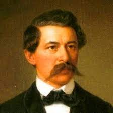

Arany János
Arany és a zene
Arany János már gyermekkorában gitározott és zongorázott. Saját elmondása szerint, amikor Debrecenben felcsapott színésznek, szép, csengõ hangja volt. Értett a kottaíráshoz is, de nem tudni, kitõl tanulta. Életének utolsó éveiben, az 1870-es évek elején névnapjára gitárt kapott ajándékba a barátaitól. Emlékezetbõl leírta ifjúkorának mindegy 150 kedvelt dalát. Gitározás közben Petõfi Sándor, Kölcsey Ferenc, Amade László és a saját verseire született, kíséret nélküli melódiákat papírra vetett, és azzal adta át Bartalus István barátjának, hogy csak halála után hozhatja nyilvánosságra. Bartalus 1883. január 31-én a Kisfaludy Társaság ülésén jelentette be az Arany hagyatékából maradt dalokat, és Láng Fülöp operaénekes elõadásában, Bartalus zongorakíséretében tízet elõ is adott közülük.
Jakab István zenésítette meg a Nemzetõr-dal (1848) címû versét, mely népdallá vált. Arany Jánosnak az 1874–82 közötti évekbõl 19 saját dala maradt fenn, ezek közül tíz megjelent nyomtatásban 1883-ban Bartalus István zongorakíséretével. Arany néhány dalszöveget is írt. 1849-ben Festetics Leó zenéjére írta a Kondorosi csárda mellett címû versét. 1856. április 17-én küldte el Hej iharfa, juharfa címû versét Simonffy Kálmán zeneszerzõnek. Ugyancsak 1856-ban írta Volt nekem egy rigószõrû paripám kezdetû versét, melyet Egressi Samu zenésített meg.
Pázmán lovag címû vígballadájának témája ifj. Johann Strauss egyedüli operájának volt témája, Dóczy Lajos átírásában.
Mûvei
Arany János Összes verse
Õszikék Elektronikus kiállítás a Magyar Elektronikus Könyvtárban
Mûvei a Project Gutenbergen
Arany János mûvei a Mercator Stúdió Elektronikus Könyvkiadónál
Arany versek neves elõadóktól (online hallgatható)
Arany János versei mûfordításokban Bábel Web Antológia
Arany János prózai dolgozatai MTA
Kapcsos könyv (kézirat)
Arany János összes mûvei, Akadémiai Kiadó
Mûfordításai
Kezdetben latin, görög és német nyelvû munkákból fordított, de ahogy haladt elõre az angol nyelvben, úgy ért oda élete legjelentõsebb fordításaihoz. Mûfordításainak eredménye, hogy nevéhez köthetõ a magyar mûfordítás-irodalom fellendítése. 1860-ban lett a Kisfaludy Társaság igazgatója, és az õ irányításával alakult meg a társaság Shakespeare-bizottsága. Ez indította meg a legnagyobb arányú magyar mûfordítási vállalkozást, a teljes Shakespeare-kiadást. Tizenkilenc kötetben, 1864 és 1879 között jelentek meg a sorozat részei, melynek kiadási költségeit Tomori Anasztáz vállalta magára. Arany a már régebben megkezdett János királlyal és a Szentivánéji álommal szerepelt, illetve a sorozathoz készítette el a klasszikussá vált Hamlet-fordítását.
Jelentõsebb mûfordításai:
Versek
Sir Patrick Spens (skót ballada); kínai népballadák (angolból)
néhány vers, ballada, epigramma Horatiustól, Ludwig August Frankltól, Robert Burnstõl, Goethétõl, Byrontól (Az új görög dalnok – a Don Juan címû elbeszélõ költemény részlete), Thomas Moore-tól.
Színmûvek
Arisztophanész vígjátékai
Shakespeare
Hamlet, dán királyfi
János király
Szentivánéji álom
Wikisource-logo.svg
A magyar Wikiforrásban további forrásszövegek találhatóak
Kategória:Arany János fordításai témában.
Prózafordítások
Nyikolaj Gogol: A köpönyeg (német nyelvû kiadás alapján)
Egyesületi, testületi tagságai
A Magyar Tudományos Akadémia tiszteletbeli fõtitkára, igazgatója és rendes tagja
A Kisfaludy Társaság igazgatója és rendes tagja
A Concordia budapesti jótékonysági egylet tiszteletbeli tagja
A bölcsészhallgatókat segítõ egyesület bizottságának tiszteletbeli tagja
